.
.
Wigner's theorem
A bijection of rays preserving transition probabilities
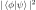
is induced by an operator on
on  , either unitary or antiunitary, unique up to a phase (Wigner 1931). Hence a symmetry group
, either unitary or antiunitary, unique up to a phase (Wigner 1931). Hence a symmetry group 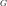
acts by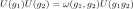
,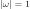
: a projective representation (Wigner 1939).SU(2) → SO(3)
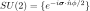
acts on traceless Hermitian matrices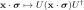
, preserving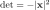
: a rotation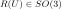
(Pauli 1927). The map is 2:1,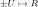
. Its kernel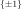
is why a rotation gives
rotation gives  on spinors.
Bargmann: for simply connected groups with no central extension of the Lie algebra (true for SU(2)), every projective representation of the quotient lifts to a true representation of the cover. Irreducible unitary representations of SU(2): dimension
on spinors.
Bargmann: for simply connected groups with no central extension of the Lie algebra (true for SU(2)), every projective representation of the quotient lifts to a true representation of the cover. Irreducible unitary representations of SU(2): dimension 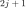
,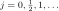
— the angular-momentum spectrum reobtained from topology.Lie algebra view
Differentiating
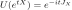
(Stone) maps the Lie algebra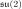
to self-adjoint generators with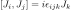
(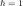
). Casimir labels irreducibles. The same scheme with the Lorentz group gives spinor representations
labels irreducibles. The same scheme with the Lorentz group gives spinor representations 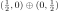
of the Dirac equation.Worked example
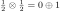
and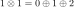
(dimensions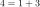
, ): character theory,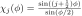
, and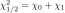
.Engineering applications
Classification of electron states in crystals by space-group representations (band labels at high-symmetry points), polarisation optics on the Poincaré sphere (SU(2) acting on Jones vectors), quantum control as paths in SU(2).
Pitfall
Phases matter: a projective representation that cannot be made linear signals a genuinely new quantum number (spin, or mass in the Galilei group via Bargmann's superselection).